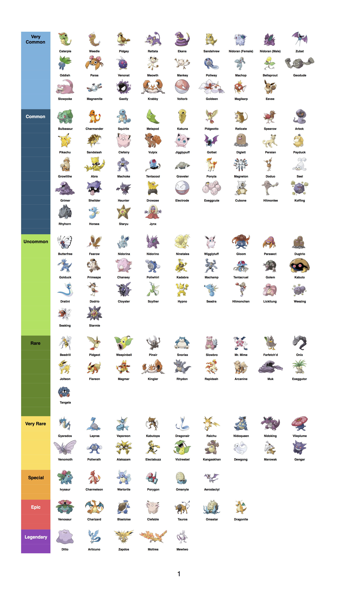

Рідкість покемонів
Рідкість покемонів в Pokemon GO
Різні види покемонів водяться в різних місцях . Більш того , їх поява залежить від часу доби і навколишнього середовища - водойми , парки тощо . Також їх положення залежить від активності гравців .
Використання Lure Modules ( Принади ) , а також фіміаму ( Incense ) з вашого інвентарю , дозволяє залучати безліч різних Покемонів в вашу локацію .
Razz Berries - або ягоди для упокорення , починають з'являтися на ПокеСтопах після досягнення 8 рівня . Також їх можна купити в магазині . Їх можна кинути в сильного Покемона , якого ви ловите , щоб той залишився в ПокеШаре . Їх варто використовувати в тих ситуаціях , коли під час лову монстра , коло на ньому має помаранчевий або червоний колір .
Активно ловите Покемонів , підвищуючи свій рівень , так як рідкісні Покемони починають з'являтися ближче до 8 рівня. Ось Приблизна таблиця рідкості Покемонів . Врахуйте , що для вашої області таблиця може відрізнятися .
